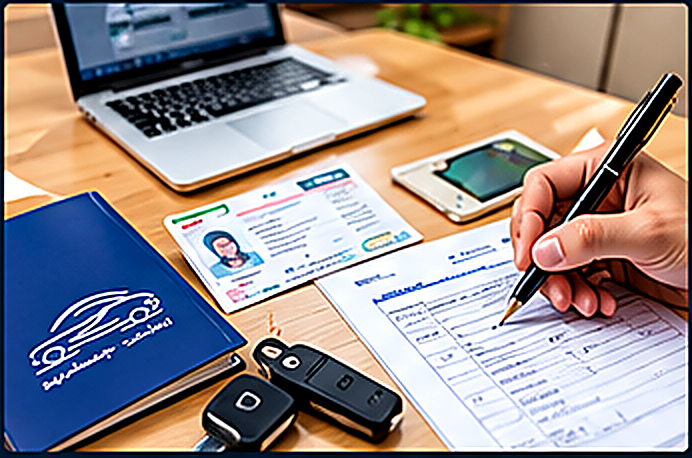
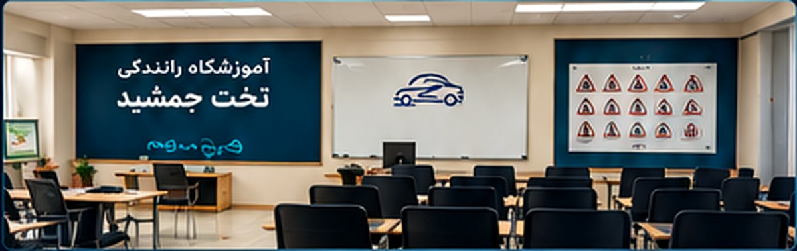
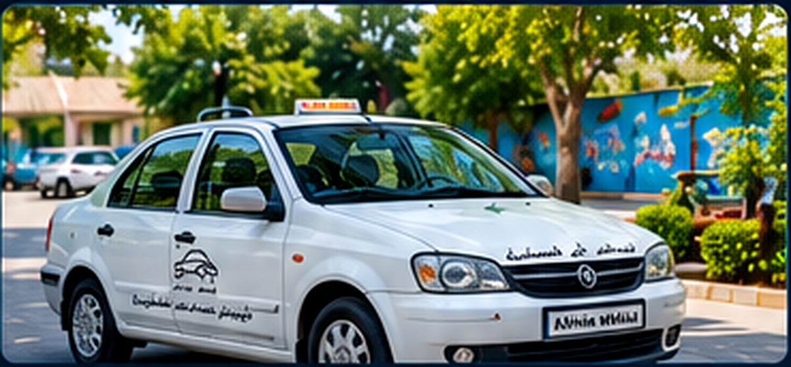
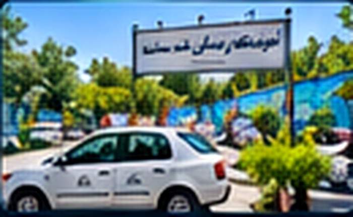
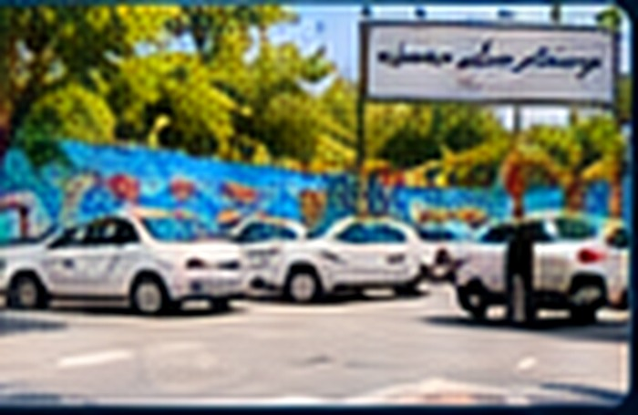
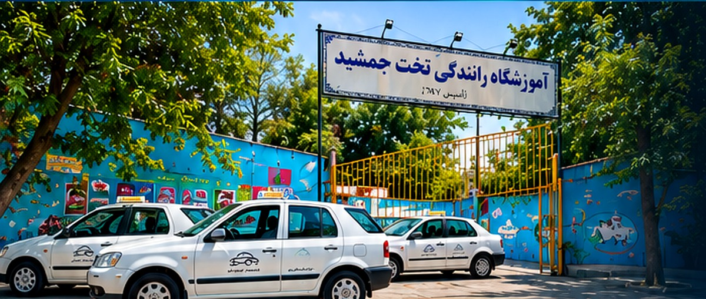

آشنایی با خودرو و شروع از صفر
تنظیم صندلی و آینهها، پدالها، روشنکردن و چکلیست پیش از حرکت.
▶ مشاهده ویدیوی آموزش مقدماتیدوره از پایه تا آمادگی برای رانندگی طراحی شده است: ۶ جلسه تئوری و ۲ جلسه عملی. هر جلسه متن آموزشی، تصویر کمکآموزشی، نکات مرور و تمرین پیشنهادی دارد. مطالب زیر راهنمای یادگیری هستند؛ برای جزئیات عددی و تغییرات قانونی، آخرین کتاب رسمی و تابلوهای نصبشده ملاک است.
برای بازشدن جلسه بعد، درس جاری را مطالعه کن و دکمه «تکمیل جلسه» را بزن. پیشرفت روی همین دستگاه ذخیره میشود.
برنامه ۸ روزه ویدئویی
هر روز یک موضوع مشخص را ببین و سپس همان مهارت را با مربی و در شرایط قانونی تمرین کن. ویدیوها از منابع آموزشی فارسی انتخاب شدهاند؛ برای قوانین و جزئیات آزمون، آموزش مربی و مقررات معتبر ملاک است.
تنظیم صندلی و آینهها، پدالها، روشنکردن و چکلیست پیش از حرکت.
▶ مشاهده ویدیوی آموزش مقدماتیشناخت نقطه درگیری کلاچ و حرکت آرام در مسیر هموار.
▶ مشاهده آموزش کلاچ و شروع حرکتکنترل اولیه خودرو و ایجاد عادتهای درست برای هنرجوی تازهکار.
▶ مشاهده ویدیوی روزهای اول رانندگیبررسی آینهها، نقطه کور و اعلام قصد پیش از جابهجایی.
▶ دیدن ویدیوهای این موضوعدرک ابعاد خودرو و استفاده از نشانههای دیداری با راهنمایی مربی.
▶ دیدن ویدیوهای این موضوعتشخیص موقعیت، رعایت تابلوها و تصمیمگیری پیش از ورود به تقاطع.
▶ دیدن ویدیوهای این موضوعسرعت متناسب، فاصله ایمن، مشاهده خطر و رانندگی تدافعی.
▶ دیدن ویدیوهای این موضوعمرور مانورها، توقف صحیح و چکلیست پیش از آزمون با مربی.
▶ دیدن ویدیوهای این موضوعنکته: روزهای ۴ تا ۸ به صفحه نتایج جستوجوی موضوعی یوتیوب میروند تا ویدیوهای قابلدسترسی همان موضوع را انتخاب کنی؛ این لینکها به معنی تأیید رسمی ویدیوها نیستند.

رانندگی ایمن از پیش از روشنکردن خودرو آغاز میشود. راننده باید از صلاحیت و هوشیاری خود، سلامت خودرو و همراهداشتن مدارک موردنیاز اطمینان پیدا کند. هدف مقررات، نظم ترافیک و محافظت از جان همه کاربران راه است.
رانندگی ایمن یعنی نگاه فقط به سپر خودروی جلویی محدود نشود. نگاه را به بخش دورتری از مسیر منتقل کن و همزمان اطراف، آینهها و کاربران آسیبپذیر را بررسی کن. وقتی به تقاطع، ایستگاه اتوبوس، مدرسه، خودروی پارکشده یا گذرگاه عابر نزدیک میشوی، احتمال رفتار غیرمنتظره را در نظر بگیر. کاهش سرعت پیش از رسیدن به خطر، معمولاً بهتر از ترمز ناگهانی در آخرین لحظه است.
پیش از رانندگی باید گواهینامه متناسب با وسیله نقلیه و مدارک موردنیاز همراه راننده باشد و خودرو نیز شرایط قانونی حرکت را داشته باشد. در صورت توقف از سوی مأمور، آرامش خود را حفظ کن و مدارک را طبق روال قانونی ارائه بده. راننده مسئول رفتار خود، سلامت سرنشینان و رعایت مقررات است؛ عجله، فشار دیگران یا خالی بودن خیابان دلیل نادیدهگرفتن قانون نیست.
در ذهن خود یک سفر کوتاه را از لحظه نشستن تا پارک نهایی مرور کن. در هر مرحله بگو چه چیزی را بررسی میکنی، کجا نگاه میکنی و چه خطری ممکن است وجود داشته باشد. هدف این است که بررسیها به عادت منظم تبدیل شوند، نه کارهایی که فقط هنگام امتحان انجام میشوند.

تابلوها پیامهای مهمی درباره خطر، محدودیت، دستور و مسیر ارائه میکنند. رنگ و شکل تابلو سرنخ تشخیص سریع است، اما معنی هر تابلو باید جداگانه یاد گرفته شود.
هر بار بپرس: این تابلو چه پیامی دارد؟ از کجا باید اجرا شود؟ آیا تابلو مکمل یا پایان محدودیت وجود دارد؟ تابلوهای مشابه را کنار هم مقایسه کن و فقط به رنگ اکتفا نکن.
شکل و رنگ تابلو برای تشخیص سریع گروه آن کمک میکند، اما جای یادگیری معنی دقیق را نمیگیرد. تابلوهای اخطاری معمولاً برای جلب توجه به خطر پیشرو هستند؛ تابلوهای انتظامی میتوانند ورود، حرکت، توقف یا سرعت را محدود یا الزام کنند؛ تابلوهای راهنما مسیر و مقصد را مشخص میکنند. برخی تابلوها مکملاند و اطلاعاتی مانند فاصله تا خطر، محدوده اجرا یا پایان محدودیت را میدهند؛ بنابراین تابلو را همراه با زمینه و تابلوهای نزدیک آن بخوان.
برای هر تابلو یک کارت یادگیری بساز: تصویر یا نام، گروه، پیام، محل معمول نصب و اشتباه رایج. تابلوهای مشابه را کنار هم بگذار و تفاوتشان را توضیح بده. در مسیر واقعی، از سرنشین بخواه تابلوها را معرفی کند؛ راننده تازهکار نباید هنگام حرکت حواسش را به مطالعه یا تلفن پرت کند. تابلوهای کارگاه و انحراف موقت مسیر را جدی بگیر، چون آرایش معمول راه ممکن است تغییر کرده باشد.
ده تابلو را انتخاب کن و بدون نگاهکردن به پاسخ، پیام هرکدام را با یک جمله بیان کن. سپس توضیح بده در برابر هر تابلو چه تغییری در سرعت، مسیر یا آمادگی ذهنی لازم است. برای اعداد، محدودهها و معانی دقیق، متن کتاب رسمی و تابلو نصبشده را ملاک قرار بده.

اگر مأمور دارای صلاحیت در محل ترافیک را هدایت میکند، حرکات و دستورهای او را با توجه به مقررات اجرا کن؛ حتی اگر وضعیت چراغ یا جریان معمول متفاوت به نظر برسد. در موقعیت مبهم، از حدسزدن و حرکت ناگهانی خودداری کن. همیشه پیش از خط ایست توقف کن و گذرگاه عابر، تقاطع و مسیر خروج را مسدود نکن.
خطکشیها مرز مسیرها، جهت حرکت، محل توقف و محدوده عبور عابر را نشان میدهند. خط ممتد معمولاً محدودیت عبور از آن را مشخص میکند و خط منقطع امکان تغییر مسیر را تنها در صورت ایمن و مجاز بودن مطرح میکند. فلشهای روی سطح راه، انتخاب خط مناسب را پیش از تقاطع راهنمایی میکنند. خطکشی بهتنهایی مجوز انجام حرکت خطرناک نیست و باید با تابلوها و وضعیت ترافیک هماهنگ باشد.
در تصویر یک تقاطع فرضی، محل خط ایست، گذرگاه عابر، فلشهای مسیر و خطهای جداکننده را مشخص کن. توضیح بده اگر چراغ سبز باشد اما راه خروج بسته باشد، چرا ورود به تقاطع میتواند باعث انسداد و خطر شود.

حق تقدم مشخص میکند در موقعیت خاص چه کسی باید زودتر عبور کند. ورود شتابزده یا فرضکردن اینکه دیگران توقف میکنند، یکی از علتهای خطر در تقاطعهاست.
هنگام نزدیکشدن به تقاطع، سرعت را بهاندازهای تنظیم کن که بتوانی در صورت نیاز توقف کنی. ابتدا علائم و چراغها را بررسی کن، سپس جهت حرکت خود و دیگران را پیشبینی کن. قبل از گردش، آینهها، نقطه کور، عابر پیاده و موتورسیکلت را کنترل کن. هرگز تنها بر این فرض تکیه نکن که راننده دیگر حتماً تو را دیده یا حق تقدم را رعایت میکند.
خودرویی که از راه فرعی، پارکینگ یا محل خصوصی وارد راه عمومی میشود باید با احتیاط کامل به جریان موجود راه بدهد. در گردش به چپ، مسیر روبهرو و عابران را بررسی کن و فقط زمانی وارد مسیر شو که فضای کافی و شرایط ایمن وجود دارد. در میدانها، تابلوها و خطکشیهای محل را دنبال کن، خط مناسب را زود انتخاب کن و پیش از خروج بررسی آینه و نقطه کور را فراموش نکن.
سه سناریو بنویس: ورود از کوچه به خیابان اصلی، گردش به چپ در تقاطع و خروج از میدان. برای هرکدام مشخص کن چه علائمی را میبینی، به چه کسی باید راه بدهی و چه زمانی حرکت را آغاز میکنی. پاسخ را با مربی مرور کن، چون جزئیات موقعیت و علائم محل اهمیت دارد.

برای متوقفکردن خودرو، ابتدا راننده خطر را تشخیص میدهد و واکنش نشان میدهد؛ سپس خودرو در اثر ترمز و اصطکاک متوقف میشود. هرچه سرعت بیشتر باشد، انرژی حرکت و مسافت لازم برای توقف بیشتر میشود. خستگی، حواسپرتی و دید ضعیف زمان واکنش را افزایش میدهند. باران، شن، روغن، یخ یا لاستیک نامناسب نیز چسبندگی را کاهش میدهند. به همین دلیل باید فاصله طولی را افزایش داد و از ترمز و فرمان ناگهانی پرهیز کرد.
پیش از سبقت بررسی کن که سبقت در آن محل مجاز است، دید کافی داری، خودروی روبهرو نزدیک نیست، خودروی جلویی قصد گردش یا تغییر مسیر ندارد و پس از عبور فضای کافی برای بازگشت وجود دارد. راهنما زدن بهتنهایی حرکت را ایمن نمیکند. اگر کوچکترین تردیدی درباره فاصله یا دید داری، سبقت را انجام نده. هنگام تغییر خط نیز ابتدا آینه، سپس نقطه کور و بعد راهنما و حرکت تدریجی را انجام بده.
برای مسیر خشک، بارانی و مهآلود توضیح بده چرا باید سرعت و فاصله را تغییر داد. سپس مراحل تغییر خط را به ترتیب بیان کن و سه موقعیتی را نام ببر که باید از سبقت صرفنظر کرد.
توقف در محلهایی که دید رانندگان را میگیرند، مسیر عابر را میبندند یا دسترسی امدادی و ورودیها را مختل میکنند، میتواند خطرناک یا ممنوع باشد. پیش از توقف، آینهها را بررسی کن، راهنما بزن و سرعت را تدریجی کم کن. پیش از بازکردن در، مراقب دوچرخهسوار و موتورسوار باش. هنگام ترک خودرو، آن را در وضعیت ایمن قرار بده و مطابق آموزش مربی و دفترچه خودرو از ترمز پارک و دنده مناسب استفاده کن.
کمربند باید بهدرستی بسته شود و کودکان با وسیله مهار متناسب با سن و جثه جابهجا شوند. در اطراف مدرسه، بازار، ایستگاه اتوبوس و محلهای پرتردد احتمال عبور ناگهانی افراد را در نظر بگیر. هنگام نزدیکشدن به موتورسیکلت یا دوچرخه، فضای جانبی کافی حفظ کن و در پیچها مسیر آنها را قطع نکن. در شرایط مه و باران، چراغ مناسب را به کار ببر و از نور بالا در شرایطی که بازتاب دید را بدتر میکند استفاده نکن.
فشار و سلامت لاستیکها، عملکرد چراغها، برفپاککن، ترمز و نشتیهای غیرعادی باید بهطور منظم بررسی شوند. اگر هشدار جدی خودرو، کاهش عملکرد ترمز یا دمای غیرعادی موتور را دیدی، در محل امن توقف کن و از ادامه رانندگی پرخطر خودداری کن. سامانه داغ خنککننده را باز نکن. سرویس تخصصی را به فرد ماهر بسپار.
یک چکلیست پیش از سفر تهیه کن و توضیح بده در بارندگی، مه و شب چه تغییراتی در سرعت، فاصله، چراغها و توجه به عابران لازم است.

این جلسه باید با همراهی مربی و در خودروی آموزشی انجام شود. هدف، ساختن عادتهای صحیح پیش از حرکت است؛ نه تمرین مستقل در خیابان.
با نظارت مربی، صندلی را طوری تنظیم کن که زانوها هنگام فشردن پدالها کمی خم باشند و دستها بتوانند فرمان را با کنترل مناسب بچرخانند. پشتی صندلی، پشتسری، آینه وسط و آینههای جانبی را تنظیم کن. کمربند را ببند و مطمئن شو درها بستهاند. با کنترلها آشنا شو: راهنما، چراغها، برفپاککن، ترمز پارک، دنده و پدالها. جای دقیق کنترلها بسته به مدل خودرو متفاوت است.
پیش از حرکت، اطراف خودرو را بررسی کن و از نبودن مانع یا فرد در مسیر مطمئن شو. مطابق دستور مربی خودرو را روشن کن و تنها وقتی اجازه و شرایط ایمن وجود دارد حرکت را آغاز کن. با پدالها آرام کار کن و از شتاب ناگهانی بپرهیز. برای توقف، مسیر را بررسی کن، سرعت را تدریجی کم کن و خودرو را بدون تکان غیرضروری متوقف کن. نگاه را در مسیر حرکت نگه دار؛ خیرهشدن به کاپوت یا اهرمها کنترل مسیر را دشوار میکند.
با مربی چند بار چرخه «آمادهسازی، بررسی اطراف، شروع آرام، حرکت مستقیم، کاهش سرعت و توقف» را تکرار کن. هر بار یک مورد را ارزیابی کن: کنترل پدال، نگاه، فرمان، راهنما یا نرمی توقف. تمرین تنها در خودروی آموزشی و شرایط مجاز انجام شود.

این جلسه نیز با مربی و در شرایط قانونی و ایمن انجام میشود. مربی باید تمرینها را متناسب با سطح هنرجو و شرایط محل تنظیم کند.
پارک موفق به سرعت کم، مشاهده پیوسته و اصلاحهای کوچک وابسته است. به نشانههای مرجع که مربی آموزش میدهد توجه کن، اما به یک نقطه ثابت بهصورت کورکورانه وابسته نشو؛ جایگاه خودرو، ابعاد وسیله و محیط تغییر میکند. پیش از عقبرفتن، اطراف خودرو را بررسی کن و در طول مانور نیز مرتب مسیر و نقاط کور را کنترل کن. اگر دید کافی نداری، توقف کن و از مربی راهنمایی بخواه؛ ادامهدادن با حدس خطرناک است.
برای گردش، از قبل تصمیم بگیر، آینهها را بررسی کن، راهنما بزن و در خط مناسب قرار بگیر. هنگام نزدیکشدن به تقاطع، سرعت را کم کن و علائم، حق تقدم و عابران را بررسی کن. در مسیر مستقیم فاصله ایمن را حفظ کن و رفتار دیگران را پیشبینی کن. اگر مسیر اشتباه شد، حرکت ناگهانی یا تغییر خط خطرناک نکن؛ مسیر امن بعدی را انتخاب کن. هدف، رسیدن سریع نیست؛ هدف حرکت قابل پیشبینی و ایمن است.
پس از هر تمرین، از مربی بخواه دو نقطه قوت و دو مورد قابل بهبود را مشخص کند. اشتباهها را یادداشت کن و در تمرین بعدی روی یک یا دو مورد تمرکز کن. پیش از ورود به ترافیک پیچیده باید کنترل خودرو، مشاهده اطراف، رعایت حق تقدم، توقف نرم و استفاده درست از راهنما به سطح قابل قبول رسیده باشد. تکمیل این درس به معنی دریافت گواهینامه یا تأیید مهارت رسمی نیست؛ ارزیابی عملی باید توسط مربی و مرجع مربوط انجام شود.